Compass-and-Straightedge Portraits¶
Line-and-Circle Author Medallions for the GEOMETOR Digital Library
To give every author gallery, person card, and book title page a unified geometric signature, GEOMETOR Press constructs vector portraits strictly from straight lines and circular arcs—with zero Bézier curves—calibrated over verified public-domain masterworks.
Unified Portrait Gallery (Studies 01–48): Open Fullscreen (or
demos/portraits_gallery.html)Live 48-Slot Pantheon Poster:
editions/posters/geometor_portraits_poster.png(Open Full-Res Poster)

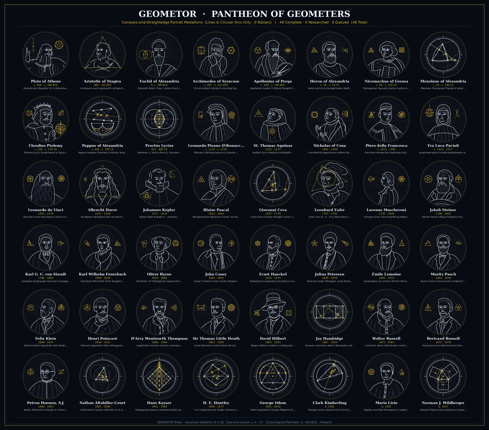
48 Complete · 37 Portraits + 11 Sacred Geometric Emblem Seals · 0 Bézier Curves)1. Canonical Medallion Specification¶
Coordinate Frame:
viewBox="-102 -106 204 196"with inner medallion circle(0, -8), radiusR = 92, and outer gold rimr = 95.2.Uniform Eye-Line & Head Scale: Every subject’s eyes align near
y = -27with cranial circleR ≈ 26so frontal and three-quarter portraits sit on one steady horizontal horizon across collection cards.Permitted Primitives:
<line>,<circle>, and circular-arc<path d="M ... A ...">only (Euclid III.12 externally tangent circular arcs for curls, beards, hoods, and drapery).Four Visual Layers: 1. Scaffold (
0.44): Medallion ring, bilateral axes, cranial circleR, golden circleR·φ, and Vesica eye circles. 2. Golden Signature (0.85): Subject’s signature geometric construction or monogram. 3. Detail (0.62): Upper eyelid fold, delicate lower lid, iris ring, and interior curl/drapery strands. 4. Primary (1.15): Connected cranial, brow, eye, nose, lip, beard, and collar contours.
2. Study 01 — Albrecht Dürer (1500)¶
Constructed over Dürer’s Self-Portrait at Twenty-Eight (1500, Alte Pinakothek, Munich — Public Domain). Placing the cranial circle R = 26 at (0, -27) hits the center hairline at -R, both temples at ±R, the base of the nose at +R, and both pupils at ±R/2 = ±13, while the cascading locks follow exact 60° rays from apex (0, -84) via Euclid III.12 tangent circular arcs.
Standalone Studio:
demos/durer_portrait_studio.html(Open Fullscreen)Vector Exports:
_static/portraits/durer_dark.svg&_static/portraits/durer_light.svg
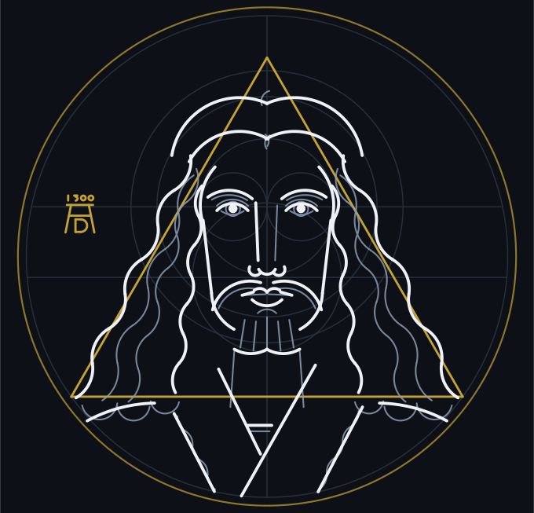
durer_dark.svg)
durer_light.svg)3. Study 02 — Euclid of Alexandria (fl. c. 300 BCE)¶
Constructed over the Urbino Baroque portrait holding an open folio of the Elements (J. Paul Getty Museum / Google Art Project — Public Domain), with three-quarter geometric symmetry reconstructing the shadowed half of the face, Euclid III.12 tangent circular arcs for the philosopher beard and rustic tunic folds, and Book I Proposition 1 (Vesica Piscis + Equilateral Triangle <A B C>) in the golden layer.
Vector Exports:
_static/portraits/euclid_dark.svg&_static/portraits/euclid_light.svg
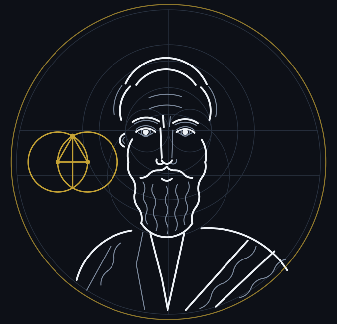
euclid_dark.svg)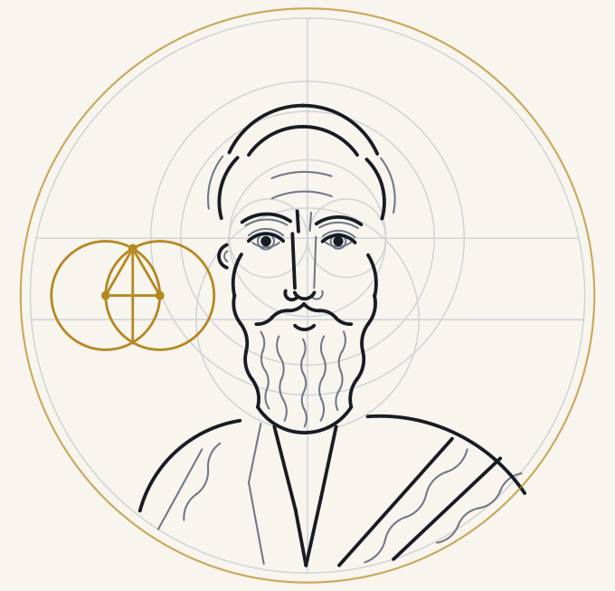
euclid_light.svg)4. Study 03 — Plato of Athens (c. 428 – c. 348 BCE)¶
Constructed over Raphael’s The School of Athens (1509–1511, Apostolic Palace, Vatican — Public Domain), capturing Plato’s upward-pointing hand, flowing beard in Euclid III.12 tangent circular arcs, the Divided Line (Republic VI), and a dodecahedral projection.
Vector Exports:
_static/portraits/plato_dark.svg&_static/portraits/plato_light.svg
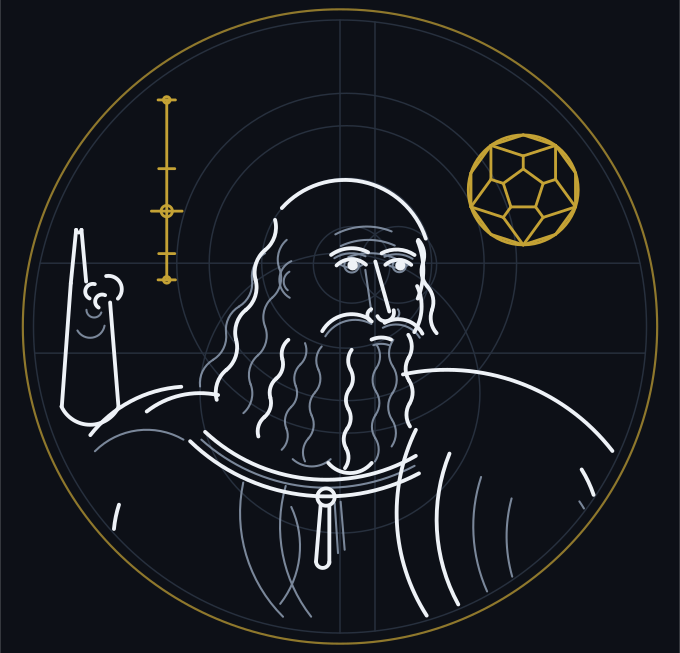
plato_dark.svg)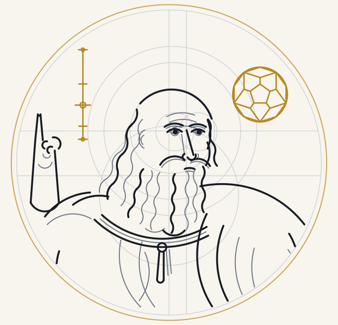
plato_light.svg)5. Study 04 — Aristotle of Stagira (384 – 322 BCE)¶
Paired across the gallery with Plato from Raphael’s The School of Athens (1509–1511, Vatican — Public Domain), featuring Aristotle’s three-quarter left profile, curled beard in Euclid III.12 tangent arcs, and the Continuum Axis & Geometric Syllogism Triangle.
Vector Exports:
_static/portraits/aristotle_dark.svg&_static/portraits/aristotle_light.svg
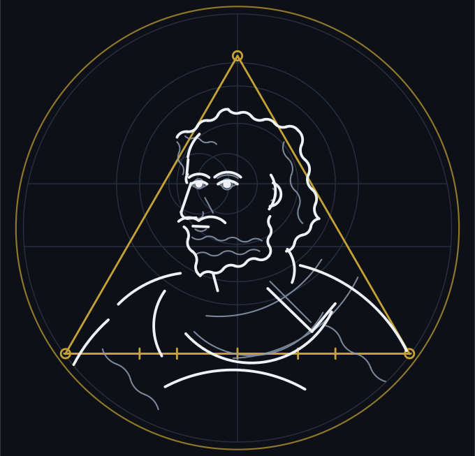
aristotle_dark.svg)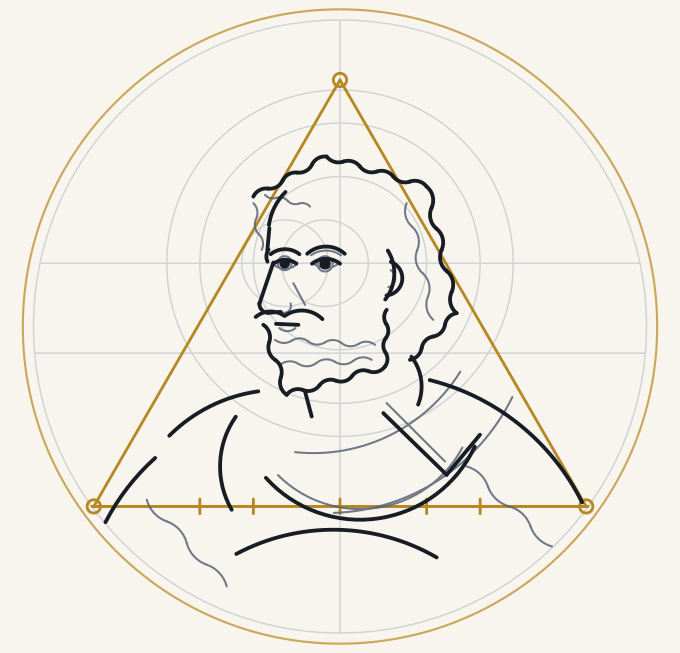
aristotle_light.svg)6. Study 05 — Fra Luca Pacioli (c. 1447 – 1517)¶
Constructed over Jacopo de’ Barbari’s 1495 portrait (Museo di Capodimonte, Naples — Public Domain), framing the Franciscan cowl hood in concentric circular arcs alongside the suspended glass rhombicuboctahedron and Golden Ratio dividers.
Vector Exports:
_static/portraits/pacioli_dark.svg&_static/portraits/pacioli_light.svg
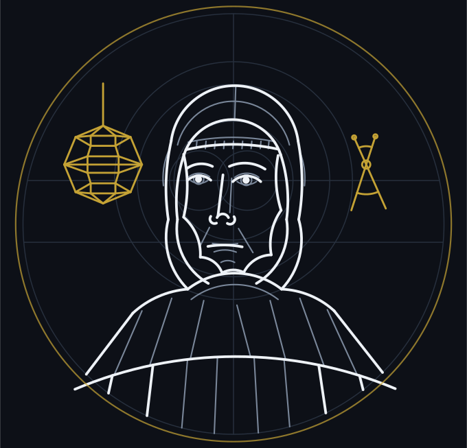
pacioli_dark.svg)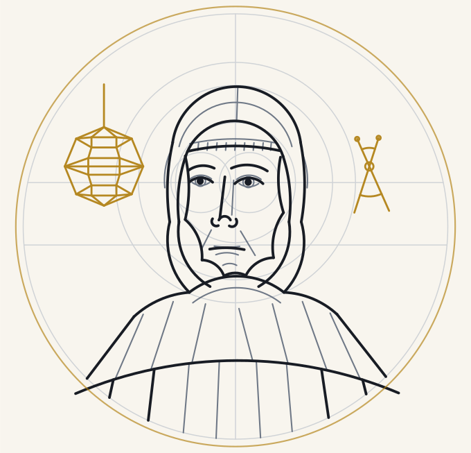
pacioli_light.svg)7. Study 06 — Johannes Kepler (1571 – 1630)¶
Constructed over the authentic Linz/Strasbourg portrait (JKepler.jpg — Public Domain), pairing Kepler’s lace ruff collar in Euclid III.12 tangent arcs with the Kepler Right Triangle \((1, \sqrt{\phi}, \phi)\) and nested Platonic orbits.
Vector Exports:
_static/portraits/kepler_dark.svg&_static/portraits/kepler_light.svg
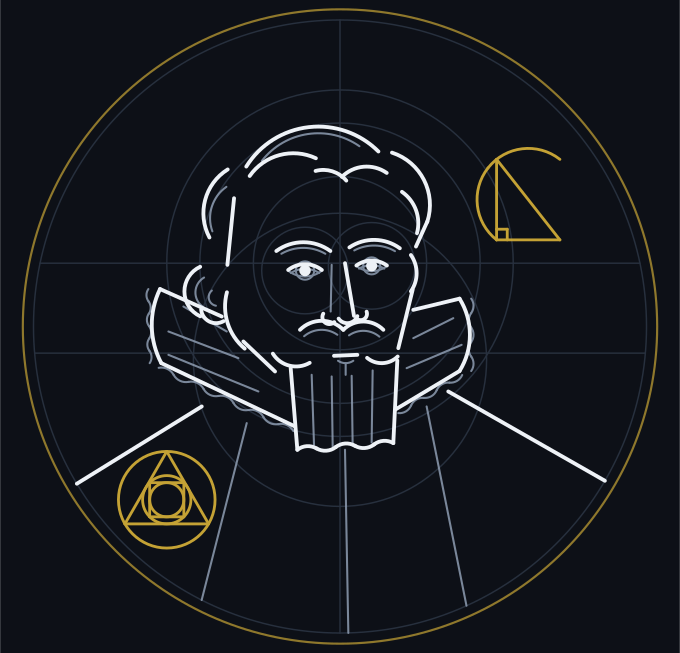
kepler_dark.svg)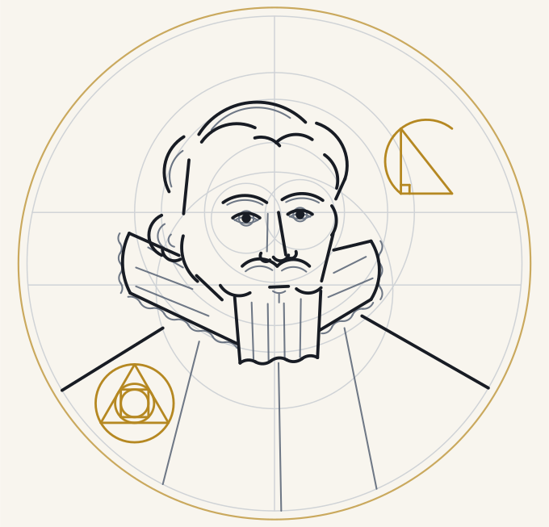
kepler_light.svg)8. Study 07 — Leonhard Euler (1707 – 1783)¶
Constructed over Jakob Emanuel Handmann’s 1753 pastel (Kunstmuseum Basel — Public Domain), rendering Euler’s silk cap in concentric circular arcs framed by the Euler Line (O–G–H) and Nine-Point Circle.
Vector Exports:
_static/portraits/euler_dark.svg&_static/portraits/euler_light.svg
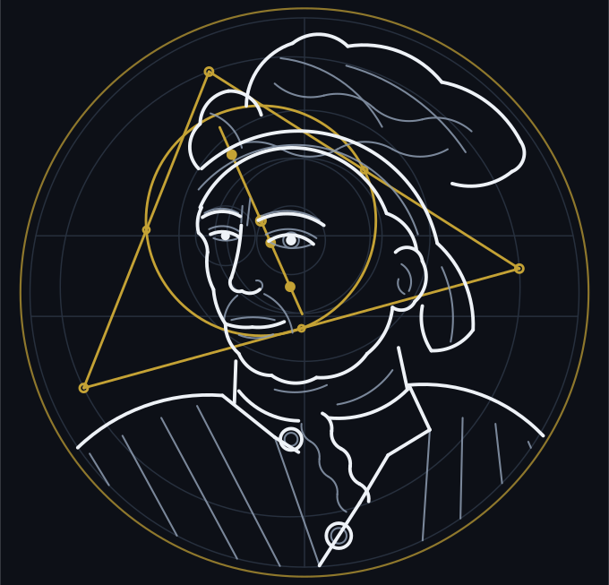
euler_dark.svg)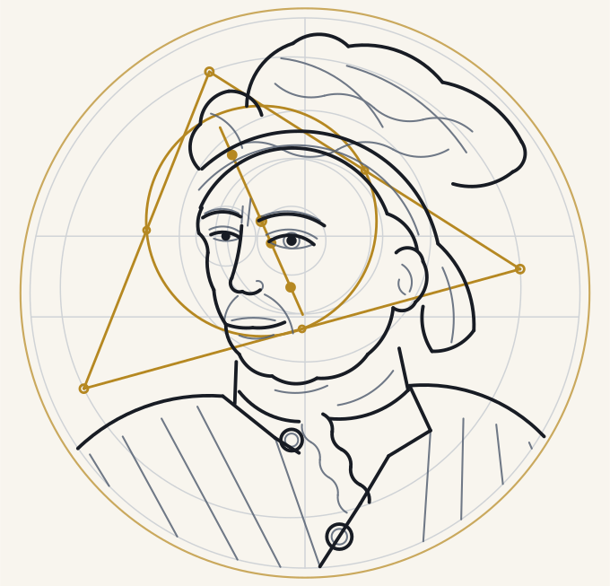
euler_light.svg)9. Study 08 — Archimedes of Syracuse (c. 287 – c. 212 BCE)¶
Constructed over Domenico Fetti’s Archimedes Thoughtful (1620, Gemäldegalerie Alte Meister, Dresden — Public Domain), pairing Archimedes’ contemplative hand-on-beard pose with his tombstone Circumscribed Cylinder & Inscribed Sphere (`2:3`) theorem and Inscribed/Circumscribed Hexagon `π` Bounds.
Vector Exports:
_static/portraits/archimedes_dark.svg&_static/portraits/archimedes_light.svg
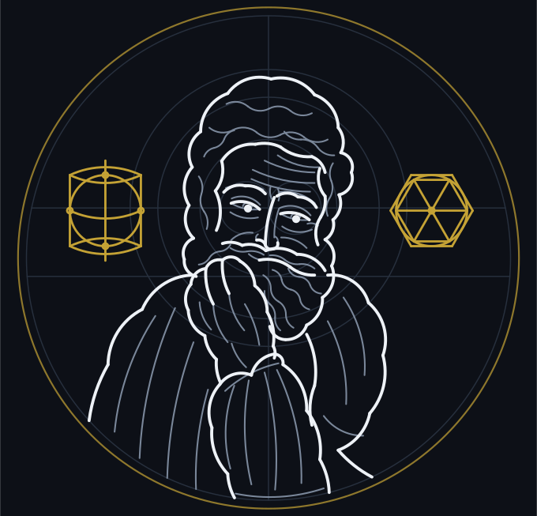
archimedes_dark.svg)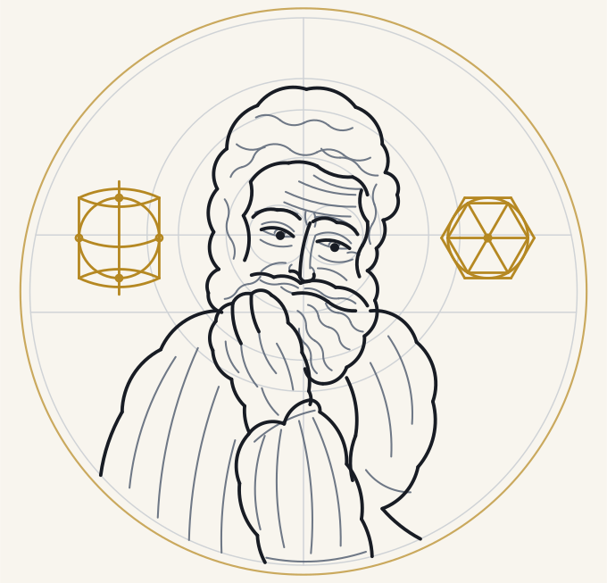
archimedes_light.svg)10. Study 09 — St. Thomas Aquinas (1225 – 1274)¶
Constructed over Carlo Crivelli’s 1476 altarpiece panel (National Gallery, London — Public Domain), uniting the Dominican tonsure and cowl arcs with the Radiant Sun of *Materia Intelligibilis* on his breastplate and the Three Degrees of Abstraction Triangle along his upward gaze.
Vector Exports:
_static/portraits/aquinas_dark.svg&_static/portraits/aquinas_light.svg
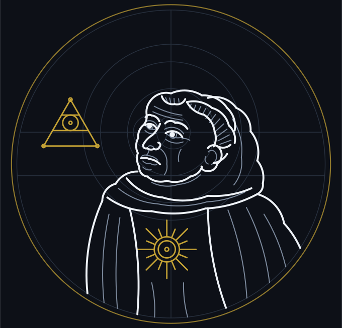
aquinas_dark.svg)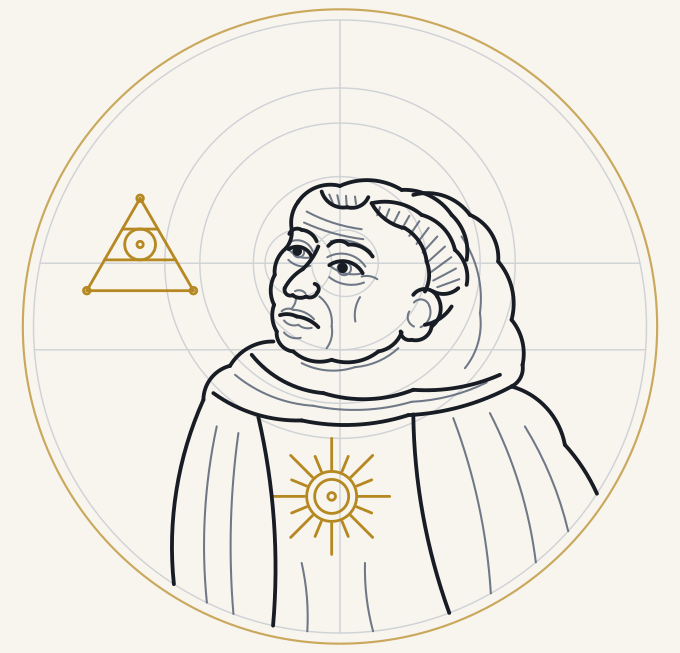
aquinas_light.svg)11. Study 10 — Blaise Pascal (1623 – 1662)¶
Constructed over the Palace of Versailles portrait after François II Quesnel (1691 — Public Domain), framing Pascal’s pointed white rabat collar and Baroque hair waves with Pascal’s Triangle Lattice and the mathematically exact *Hexagrammum Mysticum* Pascal Line.
Vector Exports:
_static/portraits/pascal_dark.svg&_static/portraits/pascal_light.svg
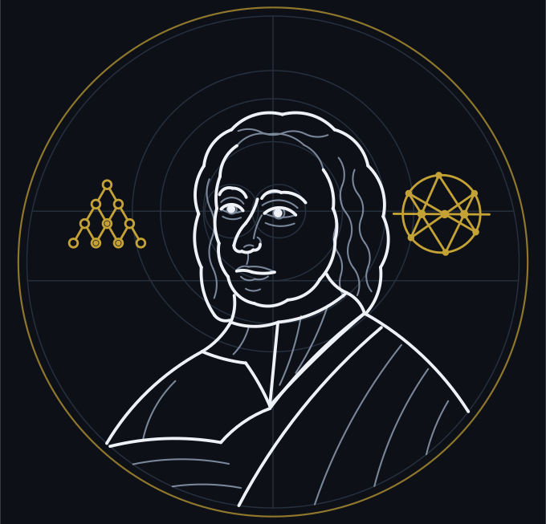
pascal_dark.svg)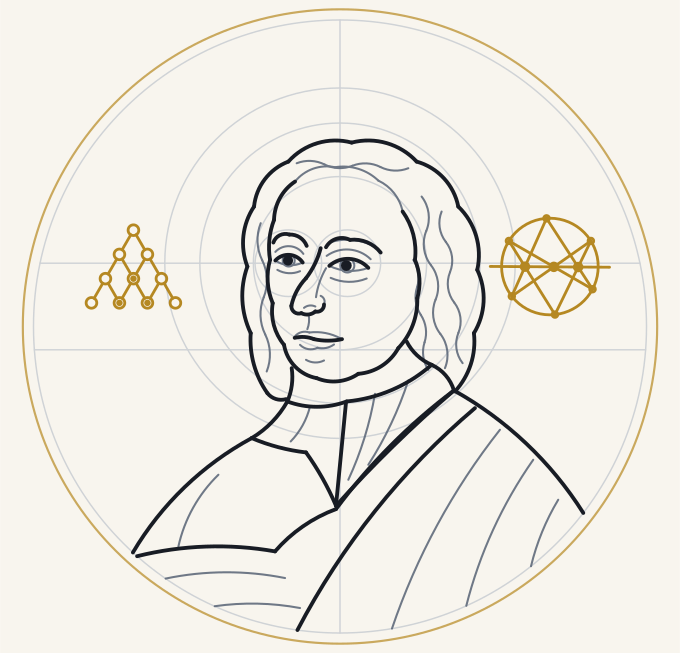
pascal_light.svg)12. Study 11 — Jakob Steiner (1796 – 1863)¶
Constructed over August Weger’s 1881 Gesammelte Werke engraving (Public Domain), pairing Steiner’s folded arms and Euclid III.12 beard waves with the Steiner Porism (6-Circle Tangent Ring) and the Poncelet–Steiner Single-Circle Harmonic Construction.
Vector Exports:
_static/portraits/steiner_dark.svg&_static/portraits/steiner_light.svg
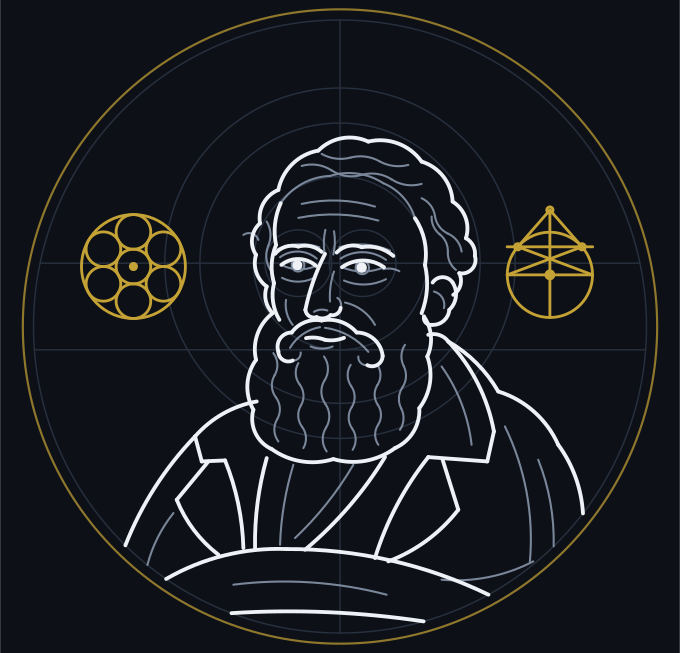
steiner_dark.svg)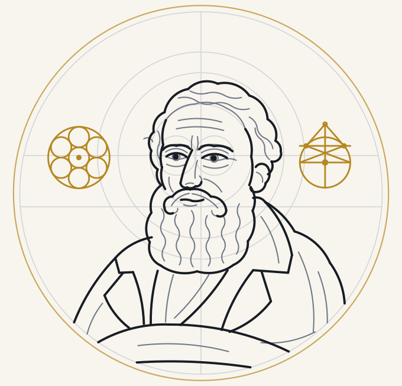
steiner_light.svg)13. Study 12 — Oliver Byrne (1810 – 1880)¶
Constructed over the historic c. 1850 portrait (Public Domain), capturing Byrne’s visionary upward gaze, billowing Victorian side-curls, and knotted cravat flanked by *Elements* I.47 (Pythagorean Windmill) and his Visual-Proof Triad.
Vector Exports:
_static/portraits/byrne_dark.svg&_static/portraits/byrne_light.svg
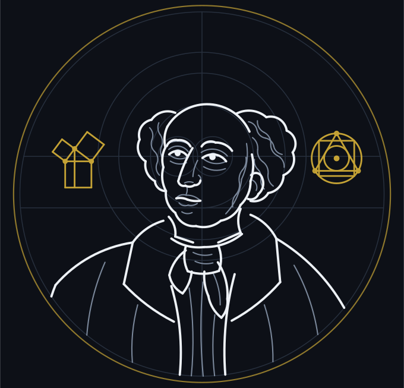
byrne_dark.svg)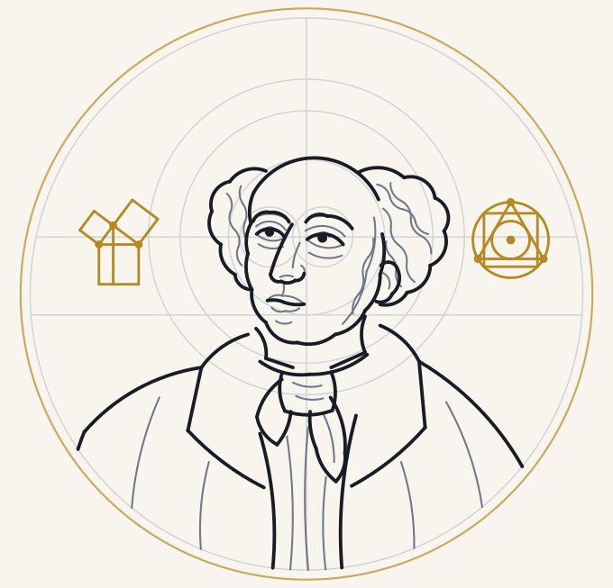
byrne_light.svg)14. Study 13 — David Hilbert (1862 – 1943)¶
Constructed over the iconic 1912 Göttingen portrait (Public Domain), rendering Hilbert’s Panama hat and circular-arc pince-nez spectacles alongside the Pappus–Hilbert Incidence Configuration and Order-2 Hilbert Space-Filling Curve.
Vector Exports:
_static/portraits/hilbert_dark.svg&_static/portraits/hilbert_light.svg
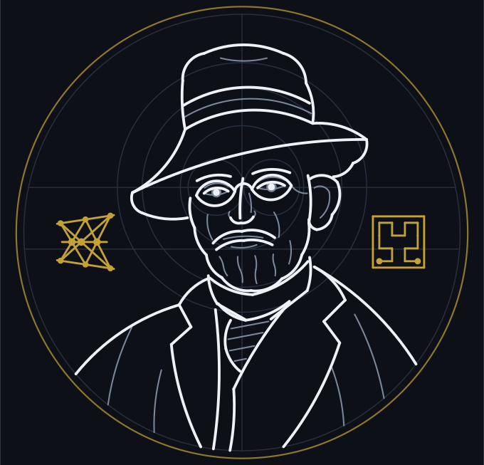
hilbert_dark.svg)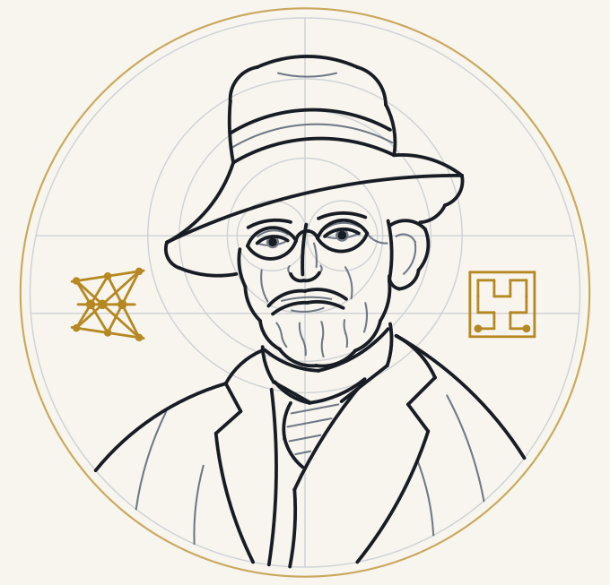
hilbert_light.svg)15. Study 14 — Bertrand Russell (1872 – 1970)¶
Constructed over the 1907 Edwardian portrait (Public Domain), framing Russell’s club collar and walrus mustache with the Projective Cross-Ratio Pencil and Logic Triad Venn Circles.
Vector Exports:
_static/portraits/bertrand_russell_dark.svg&_static/portraits/bertrand_russell_light.svg
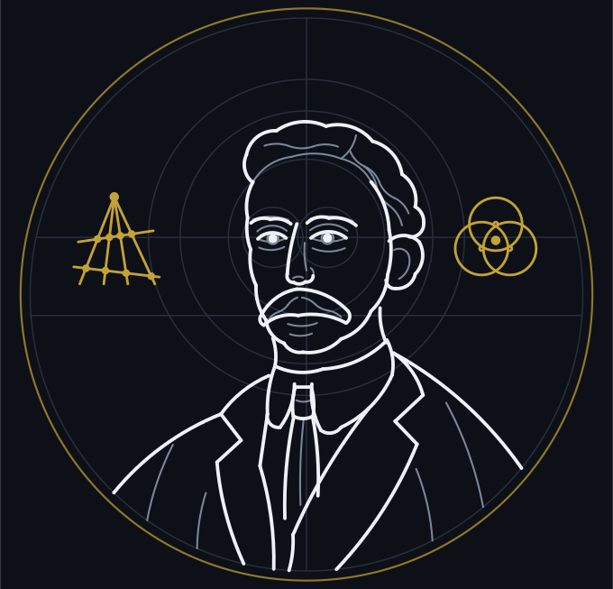
bertrand_russell_dark.svg)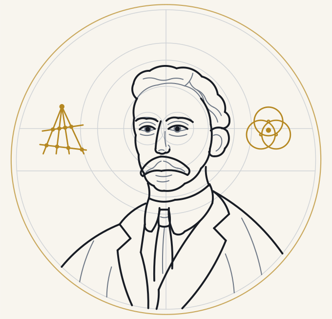
bertrand_russell_light.svg)16. Study 15 — Sir Thomas Little Heath (1861 – 1940)¶
Constructed over the c. 1910 Royal Society / MacTutor studio portrait (Public Domain), uniting Heath’s classical scholarship with an *Elements* Scroll & Golden Section (`1 : φ`) and Book XIII Inscribed Pentagon & Decagram Star.
Vector Exports:
_static/portraits/heath_dark.svg&_static/portraits/heath_light.svg
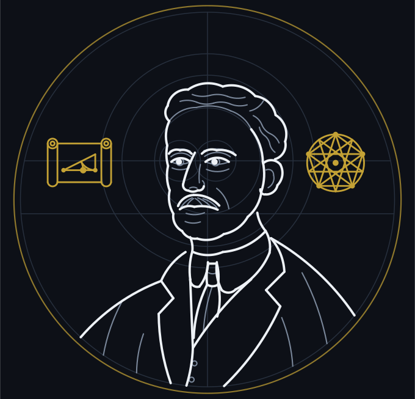
heath_dark.svg)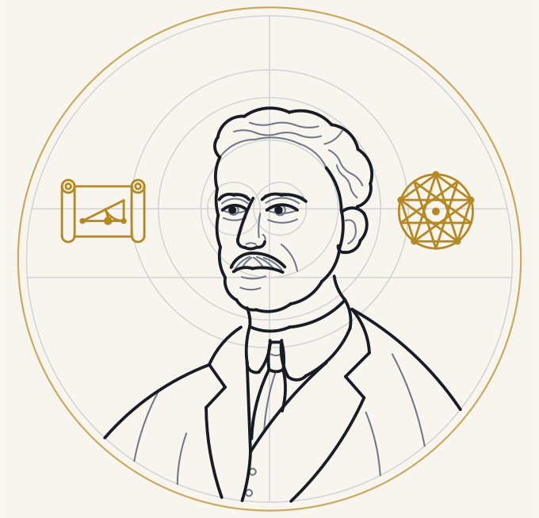
heath_light.svg)17. Study 16 — Leonardo da Vinci (1452 – 1519)¶
Constructed over the red-chalk Portrait of a Man (c. 1510–1515, Biblioteca Reale, Turin — Public Domain), balancing Leonardo’s flowing sage beard with the Vitruvian Circle-and-Square Canon and Geometric Compass Rosette.
Vector Exports:
_static/portraits/leonardo_dark.svg&_static/portraits/leonardo_light.svg
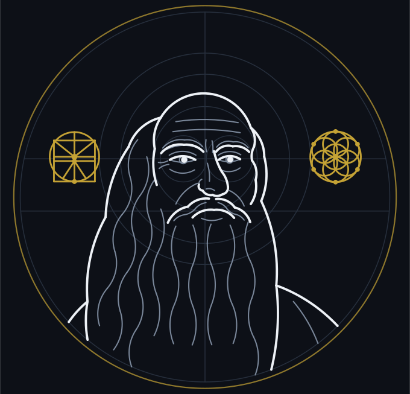
leonardo_dark.svg)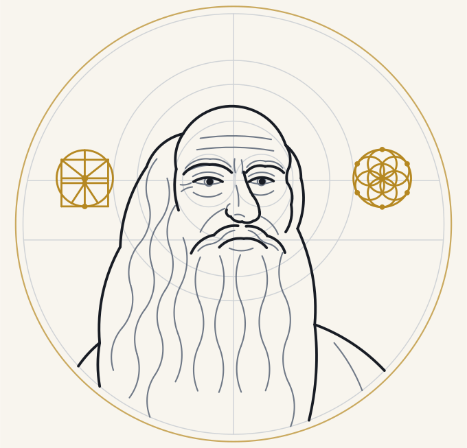
leonardo_light.svg)18. Study 17 — Piero della Francesca (c. 1415 – 1492)¶
Constructed over Santi di Tito’s c. 1590 Sansepolcro portrait (Public Domain), pairing Piero’s dignified Quattrocento silhouette with a One-Point Perspective Vanishing Grid and Wireframe Truncated Polyhedron.
Vector Exports:
_static/portraits/piero_dark.svg&_static/portraits/piero_light.svg
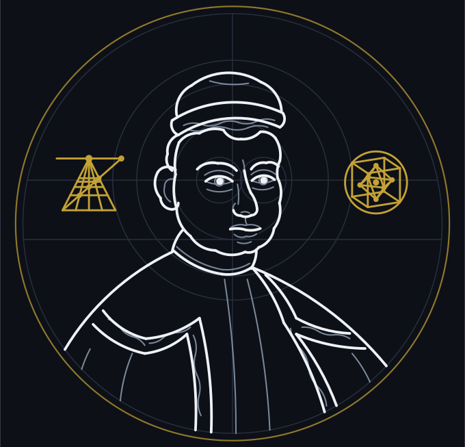
piero_dark.svg)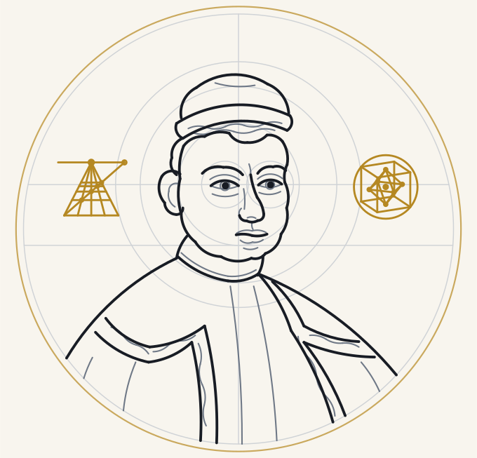
piero_light.svg)19. Study 18 — Nicholas of Cusa (1401 – 1464)¶
Constructed over the Cusanusstift altar triptych donor portrait (c. 1460–1480, Bernkastel-Kues — Public Domain), framing Cusanus’s cardinal biretta with Coincidentia Oppositorum Infinite Polygons and Expanding Tangent Circles.
Vector Exports:
_static/portraits/cusa_dark.svg&_static/portraits/cusa_light.svg
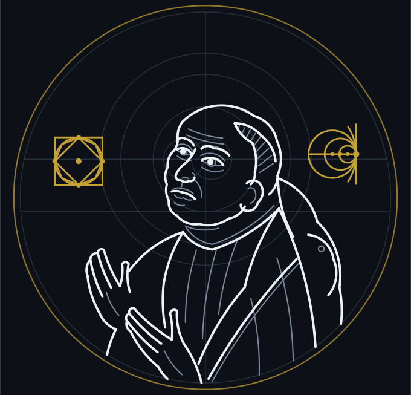
cusa_dark.svg)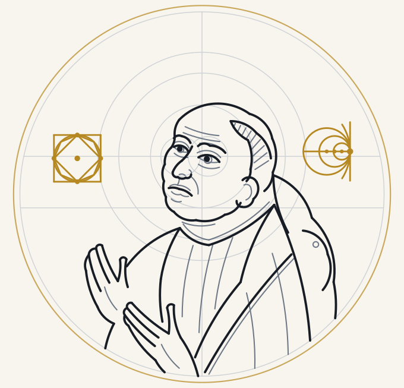
cusa_light.svg)20. Study 19 — Leonardo Pisano / Fibonacci (c. 1170 – c. 1250)¶
Constructed over the c. 1850 Tuscan engraved portrait (Public Domain), uniting Fibonacci’s medieval chaperon hood with Fibonacci Whirling Squares, a Quarter-Circle Golden Spiral, and an Inscribed Pentagram.
Vector Exports:
_static/portraits/fibonacci_dark.svg&_static/portraits/fibonacci_light.svg
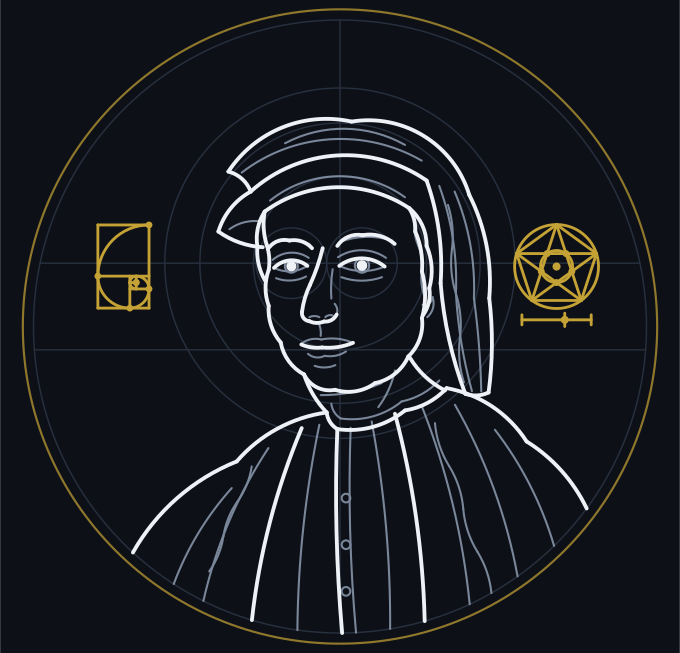
fibonacci_dark.svg)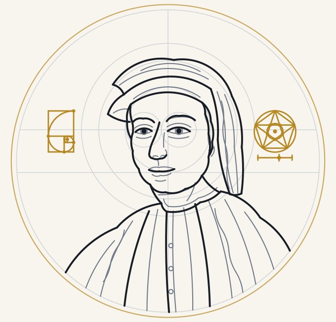
fibonacci_light.svg)21. Study 20 — Claudius Ptolemy (c. 100 – c. 170 CE)¶
Constructed over the Urbino Studiolo panel by Justus of Ghent & Pedro Berruguete (c. 1473–1476, Musée du Louvre — Public Domain), pairing Ptolemy’s crowned scholar profile with Ptolemy’s Cyclic Quadrilateral and Epicycle-on-Deferent Orbits.
Vector Exports:
_static/portraits/ptolemy_dark.svg&_static/portraits/ptolemy_light.svg
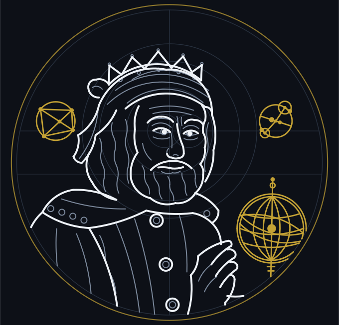
ptolemy_dark.svg)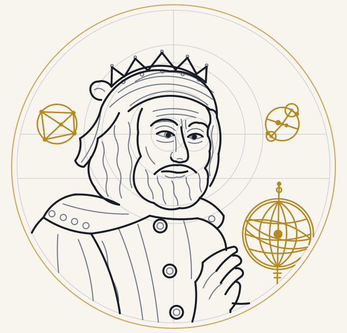
ptolemy_light.svg)22. Study 21 — Felix Klein (1849 – 1925)¶
Constructed over the pre-1897 Gebrüder Noelle Göttingen studio portrait (Accademia delle Scienze di Torino — Public Domain), framing Klein’s sweeping beard with the Beltrami–Klein Hyperbolic Disk Model and Erlangen Symmetry Triad.
Vector Exports:
_static/portraits/klein_dark.svg&_static/portraits/klein_light.svg
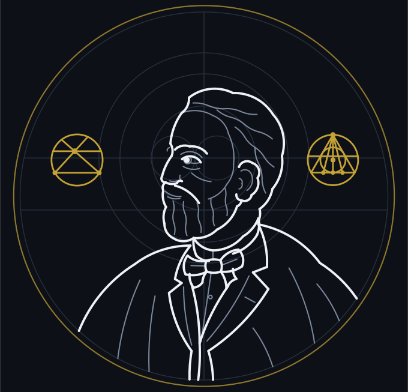
klein_dark.svg)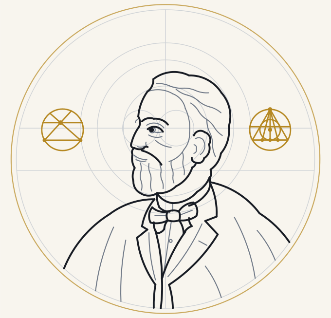
klein_light.svg)23. Study 22 — Henri Poincaré (1854 – 1912)¶
Constructed over Eugène Pirou’s 1887 Paris portrait (Public Domain), uniting Poincaré’s pince-nez and pointed beard with the Poincaré Hyperbolic Disk (exact orthogonal geodesic arcs & ideal triangle) and 3-Body Phase Orbits.
Vector Exports:
_static/portraits/poincare_dark.svg&_static/portraits/poincare_light.svg
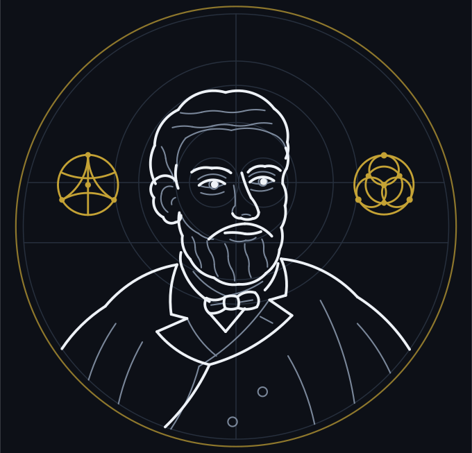
poincare_dark.svg)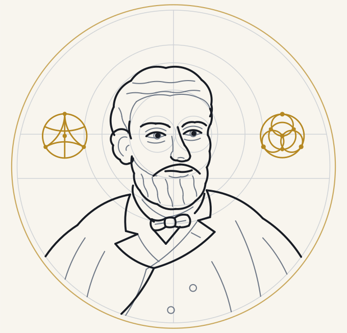
poincare_light.svg)24. Study 23 — Sir D’Arcy Wentworth Thompson (1860 – 1948)¶
Constructed over Robertson’s 1886 Dundee portrait (University of St Andrews — CC0 1.0), pairing Thompson’s naturalistic poise with a Logarithmic Gnomon Spiral and Cartesian-to-Polar Morphogenetic Transformation Grid.
Vector Exports:
_static/portraits/thompson_dark.svg&_static/portraits/thompson_light.svg
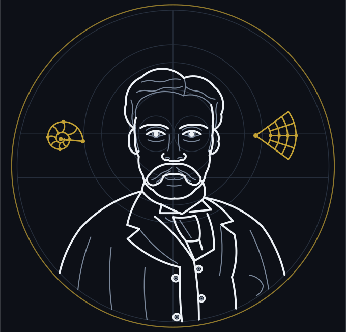
thompson_dark.svg)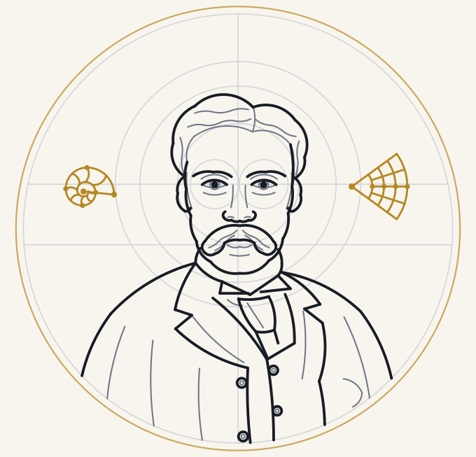
thompson_light.svg)25. Study 24 — Petrus Hoenen, S.J. (1880 – 1961)¶
Constructed over the 1930s archival portrait (Public Domain Mark 1.0), framing Hoenen’s Jesuit Roman collar and spectacles with the Noetic Abstraction Triangle (Phantasm → Intelligible Matter → Judicium) and Constructive Compass Arc.
Vector Exports:
_static/portraits/hoenen_dark.svg&_static/portraits/hoenen_light.svg
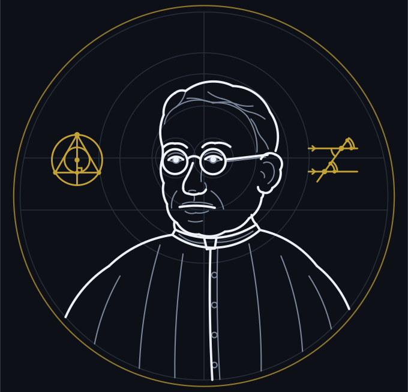
hoenen_dark.svg)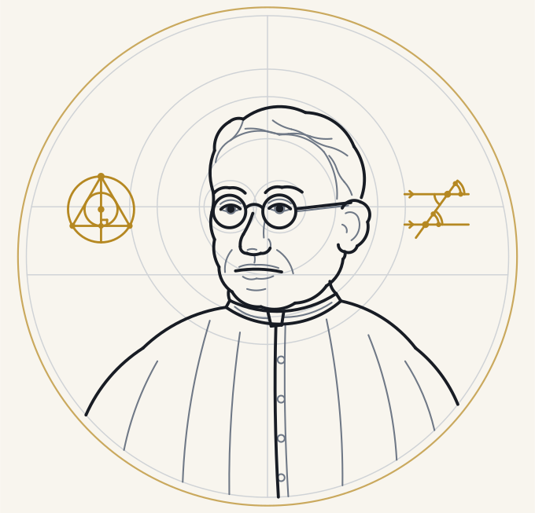
hoenen_light.svg)26. Study 25 — Walter Russell (1871 – 1963)¶
Constructed over the archival circular portrait (Public Domain), uniting Russell’s sculpted studio portrait with Concentric Wave-Field Octave Circles and the Cubic-Sphere Dual Projection.
Vector Exports:
_static/portraits/walter_russell_dark.svg&_static/portraits/walter_russell_light.svg
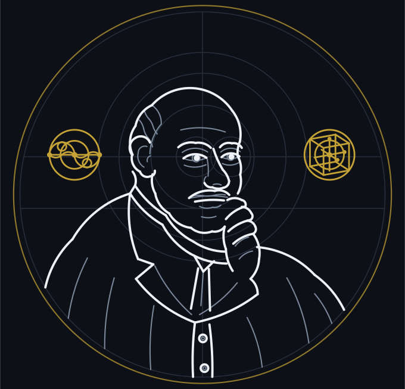
walter_russell_dark.svg)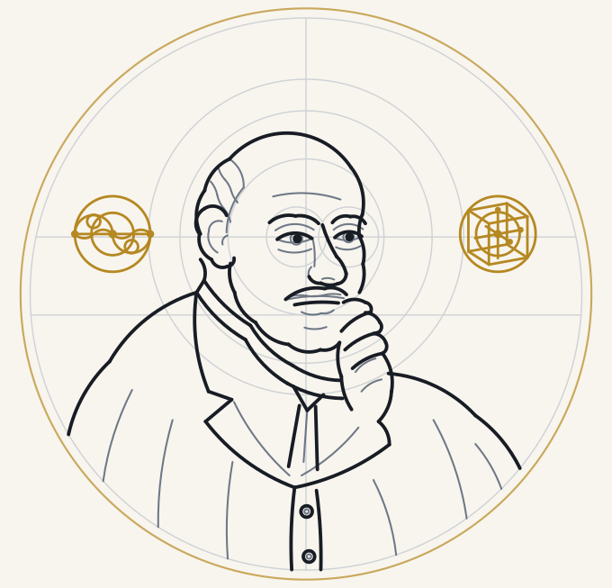
walter_russell_light.svg)27. Batch 4 — Final 12 Portraits (Studies 26–37)¶
Completing all 37 human portraits across the 48-person GEOMETOR Pantheon—spanning Hellenistic woodcuts, medieval miniatures, Neoclassical profiles, 19th-century European studio portraits, and contemporary astrophysics—strictly via MedallionBuilder (zero Bézier curves, clipped within MED_R = 92):
28. Batch 5 — 11 Sacred Geometric Emblem Seals (Studies 38–48)¶
For the 11 Pantheon geometers without verified public-domain portraits (honoring historical provenance and modern copyright strictly), GEOMETOR Press renders centered astrolabe-seal sacred geometric emblems—each analytically verified to machine or exact rational precision inside the unified 36-tick graduated bezel and 4 cardinal pins:
29. Complete Pantheon Medallion Catalog (48 of 48 Pantheon Slots)¶
All 48 Pantheon medallion records (37 verified public-domain portraits + 11 sacred geometric emblem seals; 96 exported dark/light SVGs with zero Bézier curves) are tracked in resources/portraits.yaml and resources/portraits.json:
Study |
Subject |
Verified Source / Seal Type |
Signature Geometric Motif |
|---|---|---|---|
Study 01 |
Albrecht Dürer ( |
Self-Portrait at Twenty-Eight (1500, Alte Pinakothek) |
60° hair-cascade triangle & |
Study 02 |
Euclid ( |
Urbino Baroque portrait holding Elements (Getty / Google Art Project) |
Book I Prop. 1 Vesica Piscis & Equilateral Triangle |
Study 03 |
Plato ( |
Raphael, The School of Athens (1509–1511, Vatican — |
Divided Line (Republic VI) & dodecahedral projection |
Study 04 |
Aristotle ( |
Raphael, The School of Athens (1509–1511, Vatican — |
Continuum axis & syllogism triangle |
Study 05 |
Fra Luca Pacioli ( |
Jacopo de’ Barbari (1495, Capodimonte, Naples — |
Suspended rhombicuboctahedron & Golden Ratio dividers |
Study 06 |
Johannes Kepler ( |
Authentic Linz portrait ( |
Kepler Right Triangle \((1, \sqrt{\phi}, \phi)\) & nested spheres |
Study 07 |
Leonhard Euler ( |
Jakob Emanuel Handmann pastel (1753, Kunstmuseum Basel — |
Euler Line ( |
Study 08 |
Archimedes of Syracuse ( |
Domenico Fetti (1620, Dresden — |
Circumscribed Cylinder & Inscribed Sphere ( |
Study 09 |
St. Thomas Aquinas ( |
Carlo Crivelli (1476, National Gallery, London — |
Radiant Sun of Materia Intelligibilis & Three Degrees of Abstraction |
Study 10 |
Blaise Pascal ( |
After François II Quesnel (Palace of Versailles — |
Hexagrammum Mysticum Pascal Line & Pascal’s Triangle lattice |
Study 11 |
Jakob Steiner ( |
August Weger engraving (1881 — |
Steiner Porism (6-circle ring) & Poncelet–Steiner circle |
Study 12 |
Oliver Byrne ( |
Historic portrait (c. 1850 — |
Elements I.47 Pythagorean Windmill & Visual-Proof Triad |
Study 13 |
David Hilbert ( |
1912 Göttingen portrait ( |
Pappus–Hilbert Incidence Configuration & Order-2 Hilbert Curve |
Study 14 |
Bertrand Russell ( |
1907 Edwardian portrait ( |
Projective Cross-Ratio Pencil & Logic Triad Venn Circles |
Study 15 |
Sir Thomas Little Heath ( |
|
Elements Scroll Golden Section & Book XIII Pentagon / Decagram |
Study 16 |
Leonardo da Vinci ( |
Red-chalk self-portrait (c. 1510–1515, Biblioteca Reale, Turin) |
Vitruvian Circle-and-Square Canon & Geometric Compass Rosette |
Study 17 |
Piero della Francesca ( |
Santi di Tito (c. 1590, Museo Civico di Sansepolcro) |
One-Point Perspective Vanishing Grid & Truncated Polyhedron |
Study 18 |
Nicholas of Cusa ( |
Master of the Life of the Virgin (c. 1460–1480, Cusanusstift) |
Coincidentia Oppositorum Infinite Polygons & Expanding Tangent Circles |
Study 19 |
Leonardo Pisano (Fibonacci) ( |
19th-century Italian engraving (c. 1850 — |
Fibonacci Whirling Squares & Quarter-Circle Golden Spiral |
Study 20 |
Claudius Ptolemy ( |
Justus of Ghent & Pedro Berruguete (c. 1473–1476, Louvre) |
Ptolemy Cyclic Quadrilateral & Epicycle-on-Deferent Orbits |
Study 21 |
Felix Klein ( |
Gebrüder Noelle (ante 1897, Accademia delle Scienze di Torino) |
Beltrami–Klein Hyperbolic Disk Model & Erlangen Symmetry Triad |
Study 22 |
Henri Poincaré ( |
Eugène Pirou (1887, Paris — |
Poincaré Hyperbolic Disk Orthogonal Geodesics & 3-Body Orbits |
Study 23 |
D’Arcy Wentworth Thompson ( |
Robertson, Dundee (1886, St Andrews — CC0 1.0) |
Logarithmic Gnomon Spiral & Morphogenetic Transformation Grid |
Study 24 |
Petrus Hoenen, S.J. ( |
Archival 1930s portrait (PD Mark 1.0 — |
Noetic Abstraction Triangle & Constructive Compass Arc |
Study 25 |
Walter Russell ( |
Archival circular portrait (Public Domain — |
Concentric Wave-Field Octave Circles & Cubic-Sphere Dual Projection |
Study 26 |
Apollonius of Perga ( |
1537 Venice woodcut (Public Domain) |
Descartes Apollonian Gasket & Orthogonal Coaxal Circles |
Study 27 |
Heron of Alexandria ( |
Classical Hellenic bust engraving (Public Domain) |
Heron Incircle (\(A = r s\)) & Catoptrica Reflection Proof |
Study 28 |
Nicomachus of Gerasa ( |
12th-century Cambridge MS illuminated miniature (Public Domain) |
Pythagorean Tetractys & Odd Square Gnomon Lattice |
Study 29 |
Lorenzo Mascheroni ( |
|
Napoleon’s Compass-Only Circle Quartering & Seed of Life |
Study 30 |
Karl G. C. von Staudt ( |
19th-century Erlangen archival portrait (Public Domain) |
Complete Quadrangle Harmonic Throw \(H(A,B;C,D)\) & Polarity Circle |
Study 31 |
Karl Wilhelm Feuerbach ( |
Romantic pencil portrait (Public Domain) |
Feuerbach Nine-Point / Incircle / Excircle Tangencies (\(X(11)\)) |
Study 32 |
John Casey ( |
19th-century Irish archival portrait (Public Domain) |
Casey’s Theorem (4 Circles Tangent to a 5th) & Radical Axis |
Study 33 |
Ernst Haeckel ( |
Archival left-profile naturalist portrait (Public Domain) |
Circogonia icosahedra Radiolarian & Actinoptychus Diatom Star |
Study 34 |
Julius Petersen ( |
19th-century Danish cabinet portrait (Public Domain) |
Petersen Graph (10 Vertices, 15 Edges) & Center of Similitude |
Study 35 |
Émile Lemoine ( |
19th-century French studio portrait (Public Domain) |
First Lemoine Circle & Symmedians (\(X(6)\)) + Géométrographie Compass |
Study 36 |
Moritz Pasch ( |
Giessen G. Backofen cabinet portrait (Public Domain) |
Pasch’s Axiom Transversal (1882) & Linear Betweenness Triad |
Study 37 |
Mario Livio ( |
NASA / STScI portrait (Public Domain) |
Inscribed Pentagram & Recursive Penrose Golden Triangle Spiral |
Study 38 |
Menelaus of Alexandria ( |
Sacred Geometric Astrolabe Seal |
Sphaerica Great-Circle Triangle & Planar/Spherical Menelaus Transversal |
Study 39 |
Pappus of Alexandria ( |
Sacred Geometric Astrolabe Seal |
Pappus Hexagon Theorem ( |
Study 40 |
Proclus Lycius ( |
Sacred Geometric Astrolabe Seal |
\(1 : \sqrt{3} : 3\) Neoplatonic Triad & Elements I.1 Vesica Piscis |
Study 41 |
Giovanni Ceva ( |
Sacred Geometric Astrolabe Seal |
Concurrent Cevians ( |
Study 42 |
Jay Hambidge ( |
Sacred Geometric Astrolabe Seal |
Dynamic Symmetry \(1 : \sqrt{5}\) Unfolding & 7-Turn Whirling-Square Spiral |
Study 43 |
Nathan Altshiller-Court ( |
Sacred Geometric Astrolabe Seal |
Four Congruent Orthocentric Circumcircles & Shared Nine-Point Circle |
Study 44 |
Hans Kayser ( |
Sacred Geometric Astrolabe Seal |
|
Study 45 |
H. E. Huntley ( |
Sacred Geometric Astrolabe Seal |
|
Study 46 |
George Odom ( |
Sacred Geometric Astrolabe Seal |
Equilateral Triangle Midpoint-Chord Golden Section (\(AB:BC = \phi\)) |
Study 47 |
Clark Kimberling ( |
Sacred Geometric Astrolabe Seal |
ETC Quartet \(X(1)\text{–}X(4)\) Constellation, Euler Line & \(X(11)\) |
Study 48 |
Norman J. Wildberger ( |
Sacred Geometric Astrolabe Seal |
|